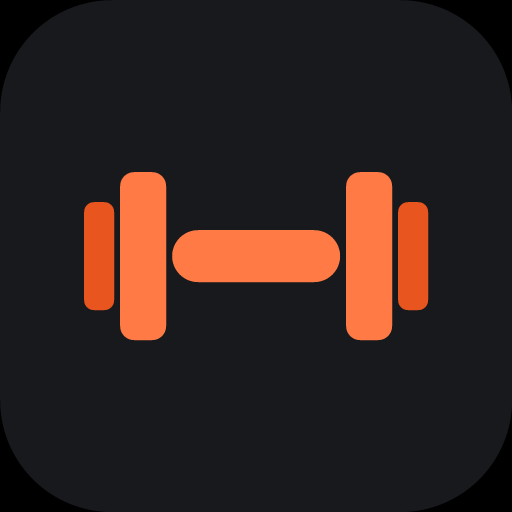

SpotterYou save fitness reels you never come back to. Spotter reads the exercises, sets and reps out of the video, then walks you through them one at a time and remembers what you lifted.
Paste a link to a TikTok, Instagram reel, YouTube video, or any workout page.
Spotter read this off the video. If it got it wrong, put it right — your change stays on your copy.
Why do you need something different?
A workout can live in several — tap to add or remove.
Copy the workout text from the post and paste it here.
Every conversation you have had with Pumpy. Tap one to pick it up.
Android — install Spotter, then share any video to it from the share sheet. Nothing below is needed.
iPhone — for now, make a Shortcut that POSTs the shared link to this address. A native share option is coming with the App Store version. Keep the address private — it works without your password.